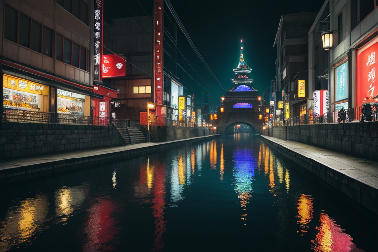
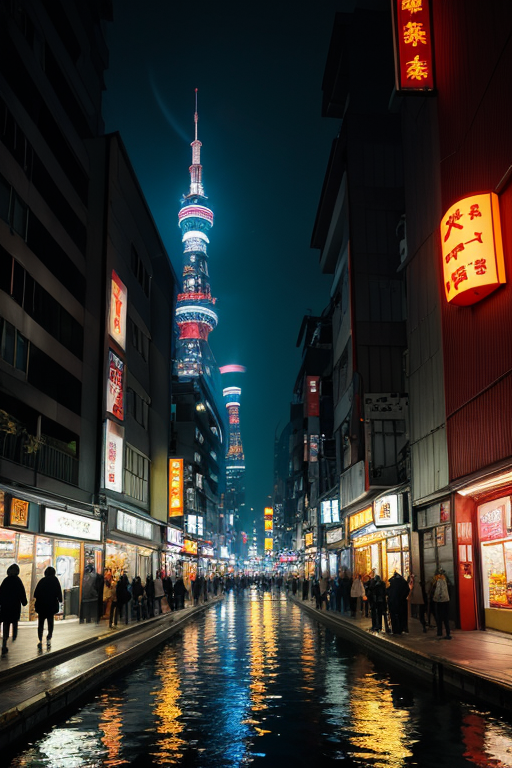
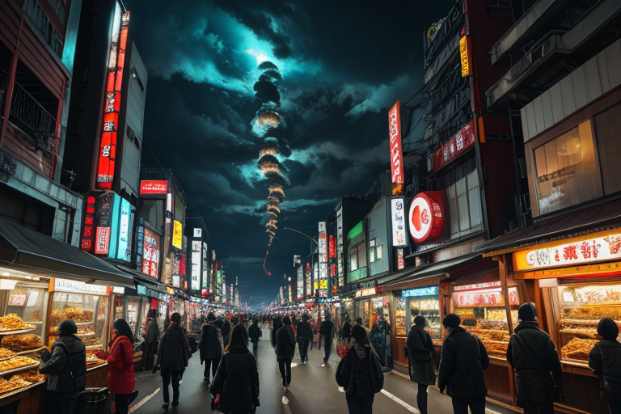
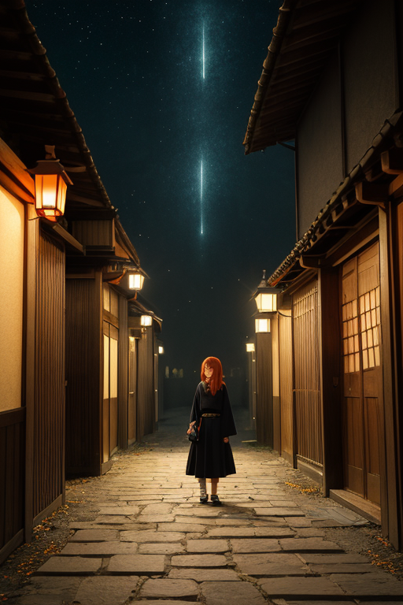
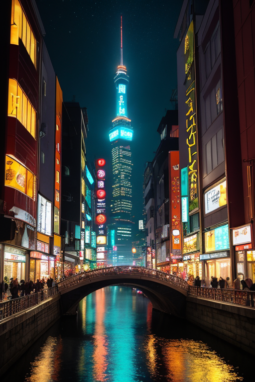

第一章 現実の大阪
あなたはまだ気づいていない。この土地にも、王がいることを。
道頓堀のネオンは、いつも通りに川面を赤く染めていた。しかし、その光はどこか深みを欠き、薄っぺらく揺れている。たこ焼きの屋台から立ち上る湯気、笑い声の絶えない路地裏、すべてが確かにそこにあるのに、その根底にあるはずの熱、あの商いと人情が織りなす独特の「熱量」が、どこか封じ込められているように感じられた。かつて大坂の陣で散った者たちの魂が眠る大阪城の石垣は、冷たく、ただの観光資源として佇んでいる。
この土地の「商魂」は、今、封印されていた。王の星から派遣され、この地の歪みを調整する役目を負った王、オオサカリア・リベルは、その核となる力を封じられたまま、日常に溶け込んでいた。笑いは、かつては人を結び、困難を切り抜ける潤滑油だった。今はただ、空虚に響く音のようにも思えた。歪みは静かに蓄積し、地盤の下で、目に見えないひずみが、ゆっくりと力を溜め始めていた。

第二章 歪みの兆候
通天閣のネオンが、深夜の新世界を鈍く照らす。その光の下で、リベルは微かな違和感を覚えていた。足元の地面が、ごく稀に、目には見えないほどの振動を伝えてくる。これは自然の歪みではない。封印そのものが劣化し、彼の内に封じられた「商魂」の力が、僅かに漏れ出しているのだ。
かつて、この力は人々の機転と交渉を後押しし、災いを笑いと駆け引きでかわす盾となった。大坂の陣の炎の中でも、万博の熱狂の中でも。しかし今、それは無防備にさらけ出された刃のようで、制御できない。路地裏で聞こえる喧嘩の声が、些細な行き違いから必要以上に鋭く、長引く。中之島のビル風が、計算外の突風を生み、通行人の傘を翻弄する。
「王様、また『それ』が疼いてますわ」
妖精リベルタの声にも、いつもの明るさに混じり、焦りが滲む。彼女たち怒気分散の妖精ですら、この漏れ出す力の奔流を完全には散らせない。
笑いは、もはや盾たり得ているのか。それとも、封じられたまま暴走し、新たな歪みを生む武器となるのか。リベルは握りしめた拳を緩め、深く息を吸った。道頓堀の川面に映るネオンの輝きが、不気味なほどに静かに揺れていた。

第三章 王の葛藤
通天閣の展望台から、新世界の雑踏を見下ろす。串カツの油の香り、笑い声、怒鳴り声。すべてが濃密な感情の粒子となって漂い、リベルの皮膚にまとわりつく。かつてはこの熱気こそが、歪みを和らげる潤滑油だった。商人たちのしたたかな駆け引き、漫才師の鋭いツッコミ。それらが生み出す「笑い」の緩衝材が、地盤の軋みを分散させていた。
今、その力の源が疼く。封印の下で鬱屈した「商魂」は、単なる活気を超え、歪みそのもののような渦を巻き始めている。リベルは手のひらを開いた。掌に浮かぶ赤と金の紋章、笑面と商輪が、微かに脈打つ。解放すれば、この渦は一気に噴出し、周囲の感情を飲み込む暴風となるかもしれない。
「盾として封じるか、武器として振るうか」
問いは、彼自身の内側から響く。感情を持たぬ存在であったはずが、この地の情熱に染まり、葛藤を覚えるようになった。王は調整者だ。英雄ではない。巨大な力を制御する微調整こそが使命である。それでも、掌の疼きは、あまりに人間的で、あまりに危うい誘惑だった。

第四章 妖精との対話
道頓堀の喧騒は、川面を隔てた裏路地では、鈍くこもった雑音に変わる。王は路地裏の小さな祠の前に佇んでいた。祠の扉が微かに開き、リベルタとナニワラの姿が、淡い光を纏いながら現れた。
「王様、その手の疼き、わかってますよ」
リベルタの声は、いつもの明るさを潜めていた。
「あたしたち『笑い』はね、もともと武器でも盾でもなかった。ただの『逃げ道』やったんです」
ナニワラが続ける。
「豊臣の世が終わった大坂の陣。焼け野原で、人は泣くこともできへんかった。その時、生まれたんや。苦しみを、泣き叫ぶ代わりに、嗤うことで逃げる『道』。商いの才で這い上がる『術』。それがオオサカリアの根っこです」
「で、この『商魂封』は？」
王が掌を見つめながら問う。
「強すぎる武器は、持ち主も傷つける」
リベルタが言った。
「嗤う力で全てを切り捨て、商いの才で全てを買いあさる。それでは、守るべき日常そのものを食い潰してしまう。だから、かつての王が、自らの情熱の大半を、この祠に封じたんや。盾として。でも…」
ナニワラが王の疼く手を見つめた。
「今、その盾が、武器に戻りたがってる。情熱が、暴走したがってる」

第五章 微調整と余韻
王は、封印された情熱の奔流を前に、ただ静かに立っていた。それは武器としての破壊力ではなく、盾としての持続力を選ぶ、という選択だった。彼は掌を祠の石にそっと押し当てた。疼きは増し、全身を震わせる。しかし、彼は笑った。かつての王がそうしたように、自らの情熱の一部を、ここに留めることを選んだのだ。それは完全な封印ではない。微調整だ。溢れんばかりの情熱を、一滴、また一滴と、この場所に還していく。
道頓堀のネオンが、いつもの賑わいを取り戻し始めた。人々の笑い声が、再び川面に揺れる。それは、かつてのような鋭い刃ではなく、包み込むような温かみを帯びていた。王は、ほんの少しだけ、静かになった自分を感じる。代償として、何かが失われた予感が胸をよぎる。それでも、彼は納得していた。守るべき日常とは、時に、自らの力を削ぎ落としてでも守るものなのだ。
夜明け前の中之島。彼は最後に、そっと掌を開いた。そこには、微かに赤い光が、盾の形をなして揺れていた。
あなたの町にも、王がいる。